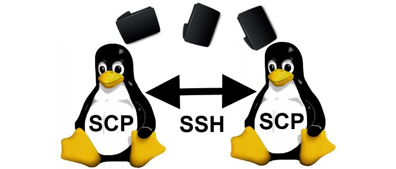
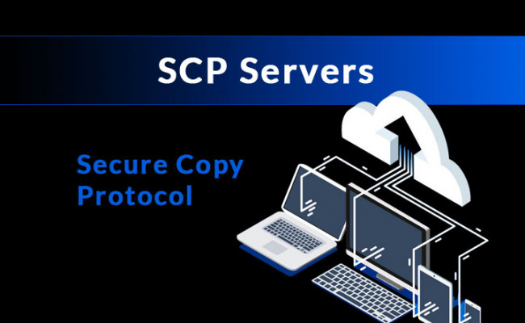
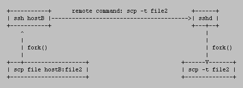
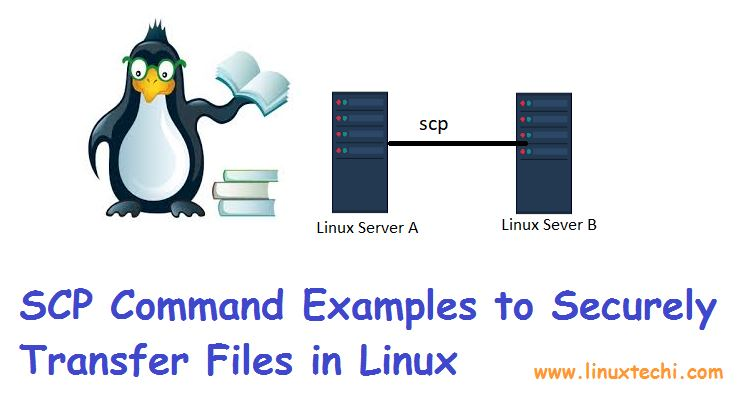

Протоколът SCP

SCP протоколът е мрежов протокол, базиран на BSD протокола RCP протокола, който позволява трансфер на файлове между отделни машини в мрежата. SCP използва SSH за трансфер на данни и за верификация, като по този начин се гарантира истинността и поверителността на информацията при транзит. Клиентът може да качва файлове на сървъра, като ако желае, може да включи и някои от основните му атрибути. Също така е възможно и свалянето на файлове или директории от сървъра. Обикновено SCP работи на TCP порт 22.
Как работи?
Клиентът стартира SSH връзка на отдалечения (remote) хост и изисква SCP процесът да бъде стартиран на отдалечения сървър. Този процес има два режима на работа:
- Сорс (source) режим, който чете файлове от диска и ги изпраща на клиента.
- Синк (sink) режим, който приема файловете, изпратени от клиента, и ги записва.
Сорс режимът се задейства чрез флаг -f (from), а синк режимът – с -t (to). Тези флагове обаче се извикват вътрешно и не е нужно да се пишат ръчно, затова и не са документирани в man документацията.
А ето и какво реално се случва, когато копираме файл:

Режимът remote to remote 
Често задаван въпрос е „Защо remote-to-remote режимът не работи с въведена парола или оторизация през клавиатурата?“. Това всъщност не е бъг, а свойство. Всъщност би могло, паролата да се въведе някъде в кода, но това не е добра практика, все пак не бихме искали хост A да разбере паролата на хост Б. Решението на „проблема“ е използването на двойка ключове за достъп.
Ето и кратък откъс от man страницата на SCP: